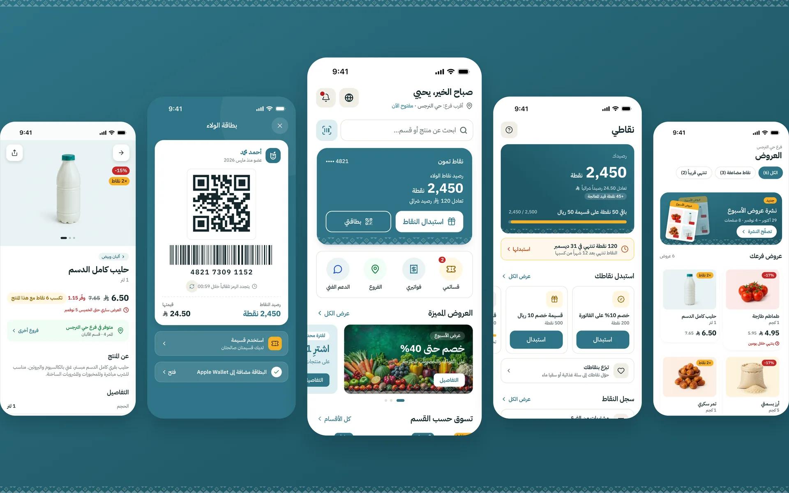
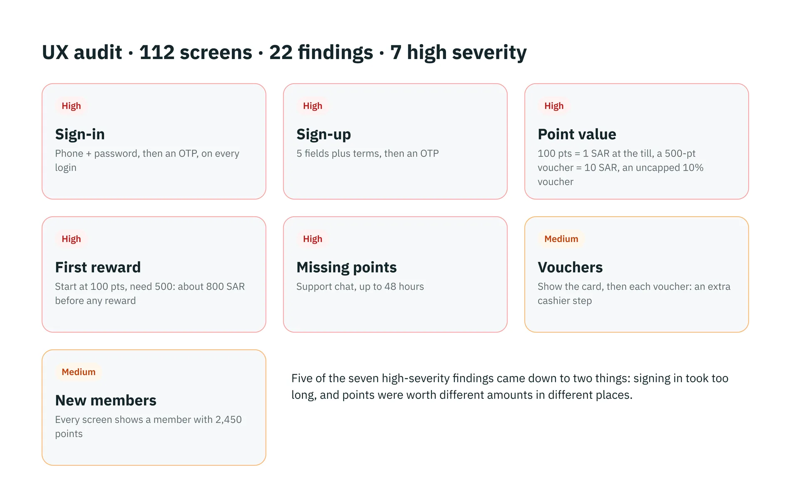
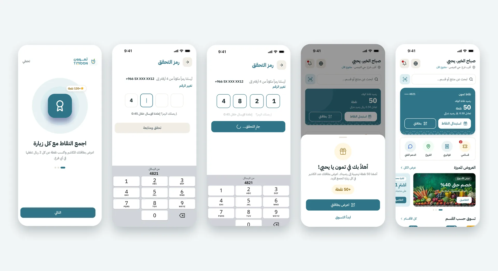
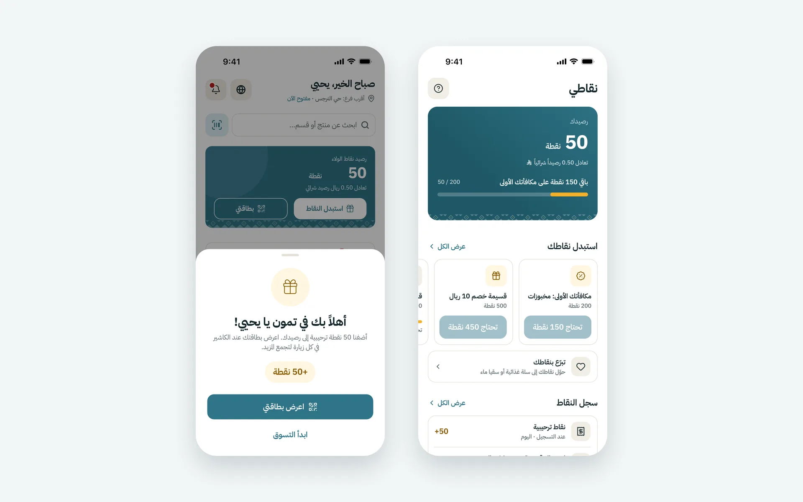
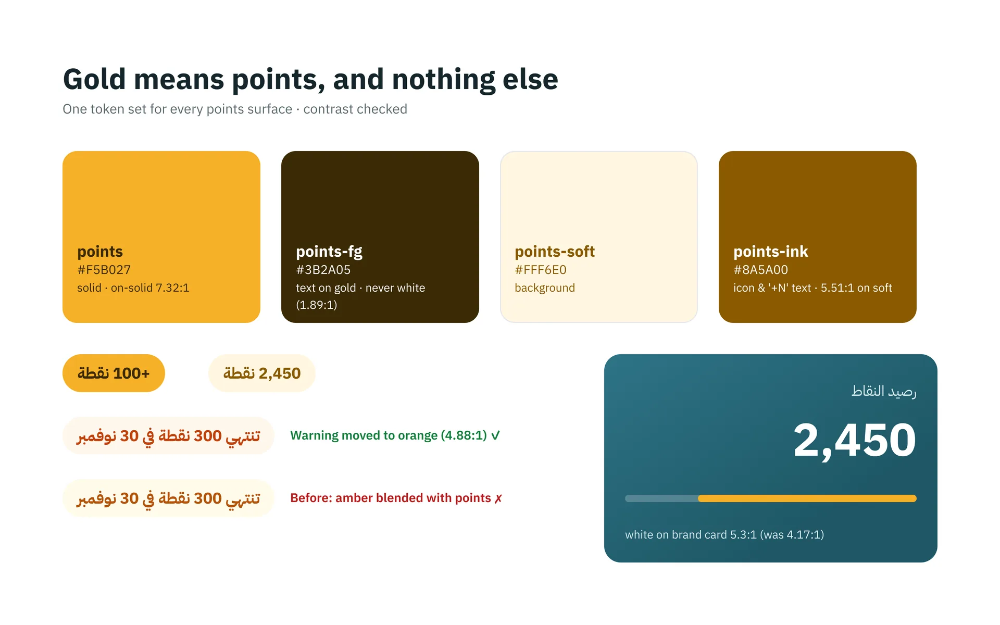
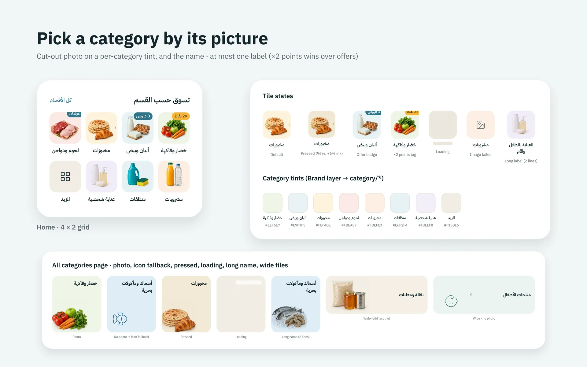
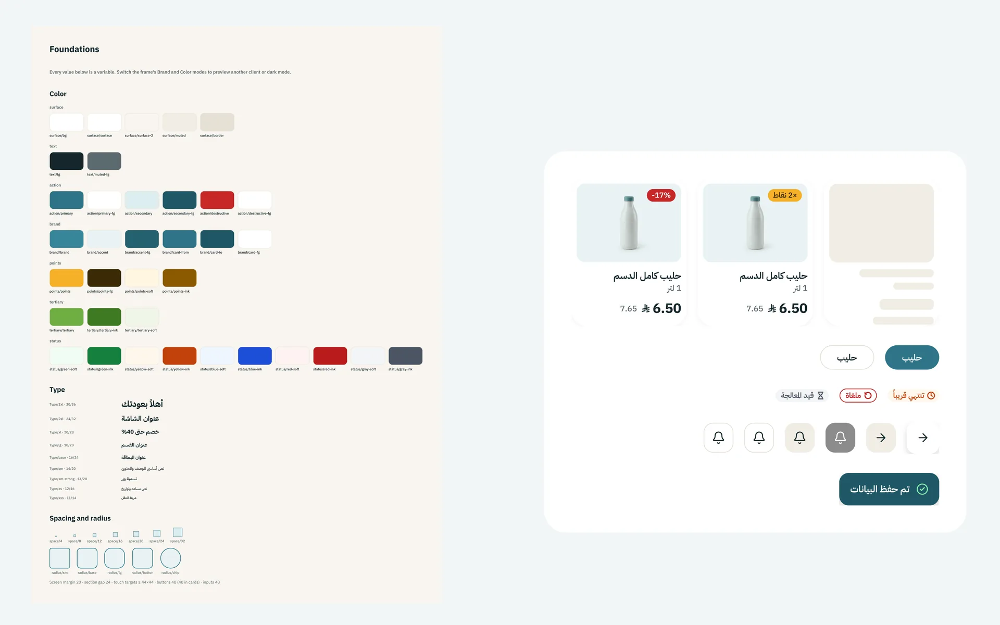

A grocery loyalty app built around the till
From a locked phone to a scannable card in 3 seconds or less, and a first reward in 300 SAR of shopping instead of 800. Tamoon is an Arabic-first loyalty app for a Saudi supermarket chain. The designs are ready for build and the app hasn't launched, so the numbers here are design outputs and launch targets, not live data.
The short version
- Tamoon's first design already had the right loop: show the card, earn points, redeem a voucher.
- I audited all 112 screens and found 22 issues. Five of the seven high-severity ones came down to two things: signing in took too long, and points were worth different amounts in different places.
- Returning members sign in with Face ID, and the card opens from Wallet, a widget, the lock screen or Siri, even offline.
- A first reward at 200 points brings it to about 300 SAR of shopping instead of 800.
- Missing points are claimed by scanning the receipt's ZATCA QR, in minutes instead of up to 48 hours.
- One white-label Figma library: a new retailer is a new Brand mode, not a new file.
From the till to the design system







Someone at a till, holding bags, with a cashier waiting
The app had to work in bright light, one-handed, with a queue behind. If the code doesn't scan on the first try, the shopper blames the app, not the scanner. That moment decides whether the app is worth keeping.
Three other constraints shaped the work:
Arabic is the source language. English is the adaptation, not the other way round.
The client wanted to reuse the app for other brands, so every colour is a token that changes per client.
Tamoon hadn't launched, so every persona and target is a hypothesis to test.
22 issues across 112 screens
Seven were high severity. These are the ones that shaped the redesign.
| Area | What the first design did | Why it hurt |
|---|---|---|
| Sign-in | Phone and password, then an OTP, on every login | Too slow at the till, and a password nobody remembers |
| Sign-up | 5 fields plus terms, then an OTP | People drop off before earning anything |
| Point value | 100 pts = 1 SAR at the till, but a 500-pt voucher = 10 SAR, and a 10% voucher had no cap | Members can't tell what their balance is worth. The business can't predict cost |
| First reward | New members start at 100 pts and need 500 | About 800 SAR of shopping before any reward |
| Missing points | Support chat, up to 48 hours | The moment trust breaks, the fix is slowest |
| Vouchers | Show the card, then show each voucher | An extra step for the cashier on every redemption |
| New members | Every screen showed a member with 2,450 points | No design for the person who just signed up |
Five hypotheses, two that drove the work
I wrote five personas as hypotheses for the first research round to confirm or drop. Two drove most decisions:
Abu Khalid
Shops from a WhatsApp list on the way home. Wants the card up fast and nothing else.
Umm Fahad
Plans the weekly shop for six people around the flyer. Wants clear savings in large, readable Arabic.
I also designed for two groups who never appear in a persona deck: older shoppers (Dynamic Type, Arabic VoiceOver, labels on every icon) and cashiers, who should be in every usability test.
Five calls that changed the loop
4A · Card first, login neverNothing may block the card
On the table: keep password and OTP for security.
What I decided: phone, OTP, then Face ID. The password becomes optional. Sign-up drops to name and phone; the rest comes later in Profile, with bonus points for finishing it.
Why: the till sets the rule. "The card in three seconds" came first in the principles, and nothing may block it: no login prompt, no update dialog, no network call. The card opens from Apple Wallet, a widget, the lock screen or Siri, works offline, and always shows the member number in Latin digits as a fallback.
Let the business choose the rate
On the table: fix the copy and move on.
What I decided: I didn't pick the rate. I put three priced options in front of the client, because this is a margin decision, not a UI decision. Whichever wins, the uncapped 10% voucher goes or gets a cap, and every balance in the app shows its SAR value at one rate.
Try it: the same 1,000-point balance and 500-point voucher under each option.
Values follow each option's rule. The client picks one; the app shows it everywhere.
A near goal beats a bigger bonus
On the table: a welcome bonus of more points.
What I decided: a small reward at 200 points (2 SAR or a free bakery item), with a progress bar on Home, the Card and the widget. With the 50 welcome points, that's about 300 SAR of shopping instead of 800, so most new members reach it within their first few visits.
Why: more points without a near goal still feels far away, especially for small baskets.
Start at 100, need 500
About 800 SAR of shopping before any reward.
Start at 50, reward at 200
About 300 SAR of shopping to the first reward.
Fix missing points in minutes, not 48 hours
On the table: a better support form.
What I decided: every Saudi receipt carries a ZATCA QR code. Scan it with the in-app scanner and the missing points are added within minutes. Pending points show as pending, never as missing.
Why: "every point is traceable" was one of the eight principles, and a 48-hour support chat breaks it at exactly the wrong moment. For what the scan can't fix, support now starts from a help hub with FAQs and open tickets. The chat asks for the topic and lets the member pick the invoice from their list, so the agent has the number, branch and amount from the first message.
4E · Gold means pointsOne colour, one meaning
What I decided: gold is reserved for loyalty points across the app. Warnings moved from amber to orange so an expiry notice never reads as a reward. Text on gold is dark brown (7.32:1), never white (1.89:1).
Why: in a data-rich screen, one colour with one meaning lets people scan faster than any label.
Every state before anything was applied
Every feature went through the same steps: review the current screen, agree the open decisions with the client, then a direction board with the default, empty, loading, error, success and edge-case states.
| Flow | What changed |
|---|---|
| Login → Home | Verified state, Home loading, a one-time welcome sheet with the welcome points |
| Scan | Product barcode (price and points check) and receipt QR to claim missing points |
| Points and history | Next reward progress, expiry warning, filtered history, pending and reversed states |
| Loyalty card | QR plus barcode, attach a voucher, offline, suspended, Apple and Google Wallet |
| Vouchers | Voucher detail, used and empty states; a full-screen celebration only for the first or a high-value redemption |
| Invoices | Month picker, filter chips, a two-tile month summary, tax-invoice request |
| Tax invoice data | Short national address with autofill, validation on save, a read-only summary once saved |
| Refer a friend | WhatsApp as the primary share, invite status, monthly cap, the friend's sign-up with the code pre-filled |
| Donate points | One licensed partner, preset or custom amount, impact in riyals and a real unit, confirm and success sheets |
| Branches | List first with a map toggle; the member's branch drives Home and offers; detail sheet with hours |
| Notifications | Compact rows, unread dot and tint, filter chips, swipe to mark read or delete with undo |
| Language and appearance | Confirm the switch in the target language, then reload; Auto, Light and Dark; text size follows the device |
| Support | Help hub first, topic chips, pick the invoice, offline messages become tickets |
| Offers | Flyer hero, filter chips with counts, library offer cards, empty, offline and image-failed states |
One library, every client
A client is a Brand mode on top of Light and Dark colour modes, so a new retailer is a new set of values, not a new file.
6A · Tokens and componentsCore → Brand → Color
- Tokens: Core → Brand → Color (Light / Dark). 13 category tints, each with an ink that passes AA on its tint.
- Components: Offer card, Category tile, Member card, Points progress, Voucher, Activity row, Status badge, Filter chip, Flyer hero, Input, Toast, Back button, Icon button and more, each with loading, pressed and empty states.
- Icon button: seven styles, including On dark and On media for the card and scanner screens, and a badge option for unread notifications. Back and icon buttons take their corner radius from one
radius/buttontoken, so one value restyles them all. - Toasts use the deep brand teal, not black, so they follow each client's brand.
- Icons: 194 curated Lucide icons at a fixed 1.5 px stroke, matched in code with
lucide-react-native.
Small rules, written down
Buttons 48/40 pt, touch targets ≥ 44 pt, inputs 14 pt corners and cards 16 pt, one shape family per row, and one Al Sadu band per screen on the main brand surface only.
6C · RolloutHand-built parts replaced with library instances
| Main app file | Second app file | |
|---|---|---|
| Icons | 613 | — |
| Offer cards | 54 | 69 |
| Status badges | 19 | — |
| Back buttons | 115 bound to the radius token, swap pending | 151 swapped |
| Icon buttons | — | 60, plus 11 notification bells with the badge |
| Filter chips and flyer hero | — | 3 chips, 1 flyer |
RTL done properly
- Contrast: white text on the brand card was 4.17:1. I darkened the gradient start (#388699 → #2E7487) to reach 5.3:1 without changing the brand feel.
- Never colour alone: an Activity row shows earned, redeemed or expired through the sign, colour and icon. Badges appear only for exceptions (pending, reversed, expiring).
- Mirroring: layout, back arrows and progress mirror. Barcodes, QR codes, clocks and logos don't. Codes and phone numbers are isolated LTR so punctuation doesn't jump.
- Language: Modern Standard Arabic in a warm Saudi tone, Gregorian dates with Hijri beside them where time matters, IBM Plex Sans Arabic at ≥ 1.6 line height.
Western digits, not Arabic-Indic
The first strategy, and the AI-drafted rules behind it, said to use Arabic-Indic digits (٢٬٤٥٠) for display in Arabic and Latin digits only for codes. I overruled it: Western digits everywhere (1,454.40, 15%), for prices, points, dates, counts and codes.
Most apps in Saudi Arabia already use Western digits, so that's what shoppers are used to reading. They're also easier to read at a glance on a screen full of prices and points, and one digit system means a price or a code never looks different in two places on the same screen. I then converted the existing designs: about 946 text layers in the main file, 741 in the second and 42 in the library.
A fast second pair of eyes, not the designer
I used Claude for a first pass of the 112-screen audit, drafting the strategy and copy, and bulk Figma work like swapping 613 icons and binding tokens. It often added more than the screen needed. Here's what I said no to:
| AI suggested | What I decided | Why |
|---|---|---|
| Arabic-Indic digits for all display numbers | Western digits everywhere | What Saudi shoppers already read in other apps, and faster to scan |
| A breadcrumb on Category details | Back button and title only | Two levels deep doesn't need a trail. The big title already says where you are |
| A tinted app background | Plain white | The category tiles are already tinted, so a tinted page made the colours fight |
| Aisle number, product count and offer badge on every category tile | Name and photo only | Three numbers on twelve tiles is noise. People pick a category by its picture |
| A save heart and a "+N points" line on every offer card | Neither; labels sit on the image | Keeps the card to one job, showing the price. Points already show in the label |
| An Al Sadu trim on every branded card | One band per screen, main brand surface only | Used everywhere, the heritage pattern turns into wallpaper |
| A fully rounded search bar for the map view | The same 14 pt input as everywhere else | One input shape across the app. The buttons beside it take the same 14 pt corners |
What I kept for myself: the point economy framing, what goes on the till screen, and every trade-off shown to the client. Still to replace: AI placeholder product photos are in the current designs and will be swapped for real shots before launch.
What the design changed
Tamoon hasn't launched yet, so there are no usage numbers. Here's what the work changed, and how launch will be measured.
Was phone, password and OTP.
50 welcome points, reward at 200.
Receipt scan instead of support chat.
| Before | After | |
|---|---|---|
| Brand card text contrast | 4.17:1 | 5.3:1 |
| Library adoption | Hand-built parts | 613 icons, 123 offer cards, 19 badges, 151 back buttons and 71 icon buttons swapped |
Hypotheses, recalibrated after 8 weeks
- North star: share of branch transactions linked to a member card
- Time to card ≤ 3 s, first-try scan success ≥ 95%
- Sign-up completion ≥ 70% in ≤ 60 s
- Median time to first reward ≤ 21 days
- Self-serve recovery of missing points ≥ 70%
Two things I'd move earlier
- Get POS answers first. Auto-applied vouchers and a rotating QR depend on what the tills can read. I designed them before that was confirmed, and some may move to a later phase.
- Put a cashier in the room on day one. The till test was planned for after design. It should have come before.
Next
A 2-week usability round with 8–10 shoppers in Riyadh (including 2 over 55), a 1-week till test with real cashiers and hardware, and a 4–6 week beta in one or two branches to set real baselines.
Client name, screens and details shared with permission.